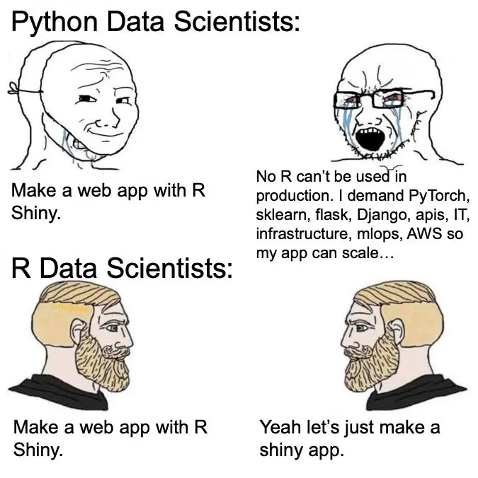
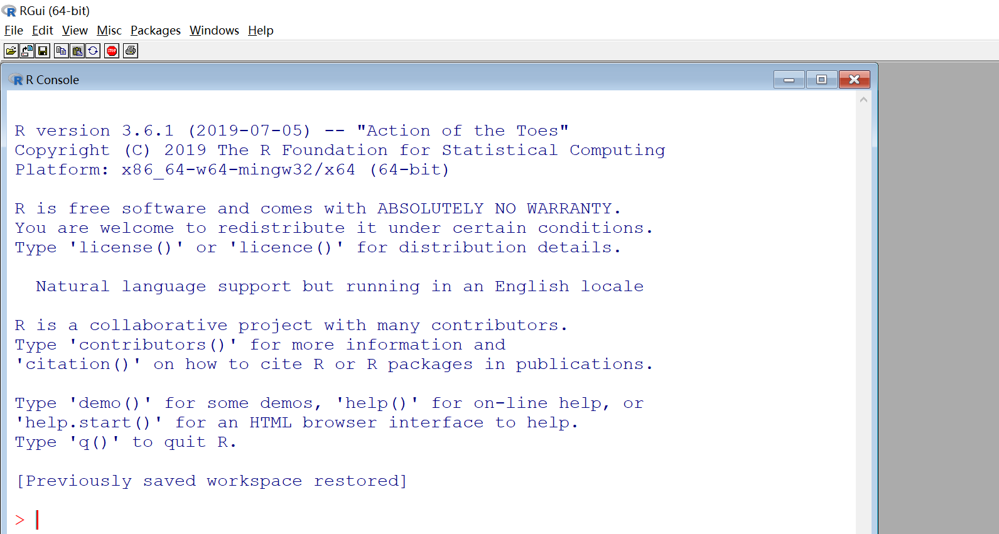
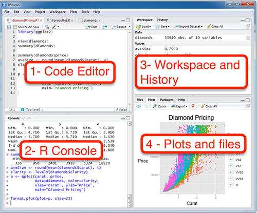
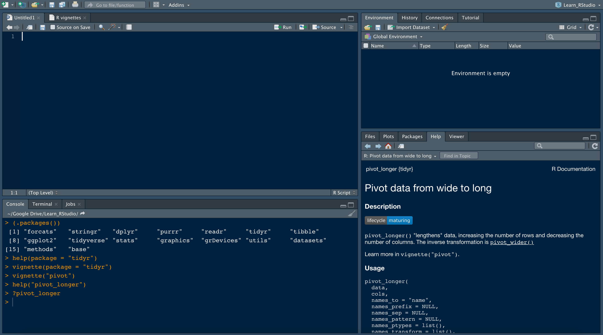
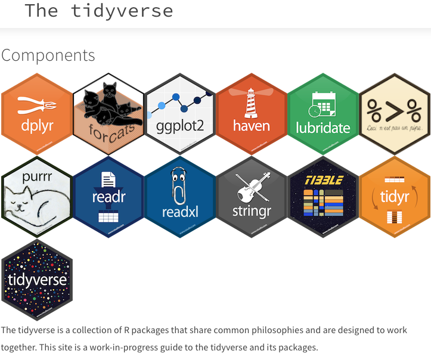
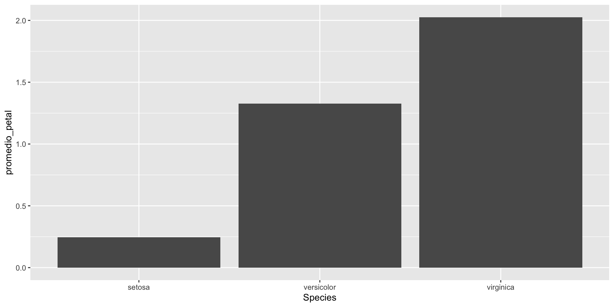
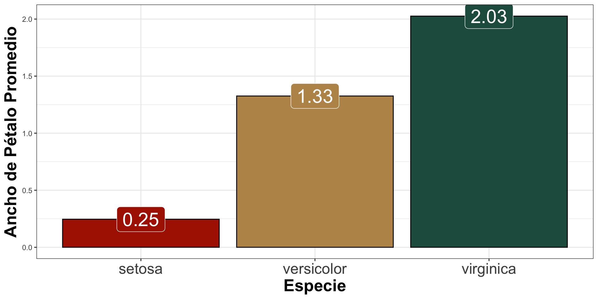
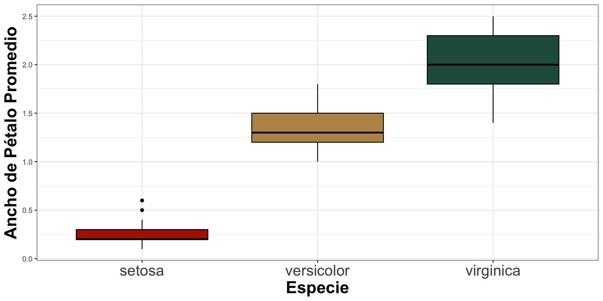
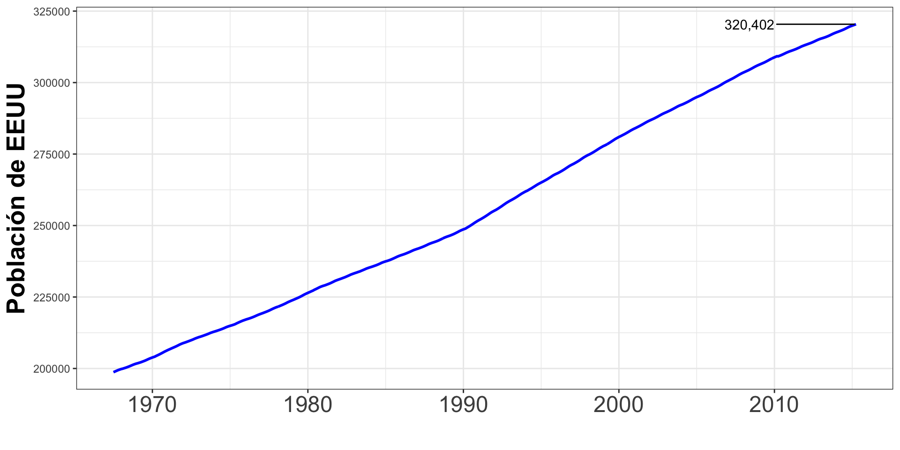

[1] "numeric - 1"[1] "numeric - 1.3"[1] "character - Hola mundo"[1] "logical - TRUE"

DAOA - Enero 2025
Created in 1993 by Ross Ihaka and Robert Gentleman at the University of Auckland

Specifically designed for statistical computing
Vast ecosystem of packages like ggplot2 and dplyr, making it ideal for analyzing, modeling, and visualizing complex datasets.
Extensive Open-Source Community with thousands of contributors and packages available on CRAN, and GitHub, R offers cutting-edge tools for machine learning.
Integrates seamlessly with tools like Quarto and Shiny, enabling users to create reproducible reports, interactive dashboards, and presentations directly from their code.
[1] "numeric - 1"[1] "numeric - 1.3"[1] "character - Hola mundo"[1] "logical - TRUE"Can either do something or return a value
Basic data science object, can either be a cross section, time-series or panel
Like the iris dataset Contains measurements of various attributes of iris flowers from three different species.
Sepal.Length Sepal.Width Petal.Length Petal.Width Species
1 5.1 3.5 1.4 0.2 setosa
2 4.9 3.0 1.4 0.2 setosa
3 4.7 3.2 1.3 0.2 setosa
4 4.6 3.1 1.5 0.2 setosa
5 5.0 3.6 1.4 0.2 setosa
6 5.4 3.9 1.7 0.4 setosaLike the economics dataset Contains economic indicators values for everyday
# A tibble: 6 × 6
date pce pop psavert uempmed unemploy
<date> <dbl> <dbl> <dbl> <dbl> <dbl>
1 2014-11-01 12051. 319564. 7.3 13 9090
2 2014-12-01 12062 319746. 7.6 12.9 8717
3 2015-01-01 12046 319929. 7.7 13.2 8903
4 2015-02-01 12082. 320075. 7.9 12.9 8610
5 2015-03-01 12158. 320231. 7.4 12 8504
6 2015-04-01 12194. 320402. 7.6 11.5 8526Created in 2011 by J.J. Allaire, the founder of Allaire Corporation, in 2022 when RStudio, the company, rebranded itself as Posit.

Script structure: Allows for a combination of vertical script writing as well as whole processes (mixture between vistudio & jupyter)
Project development: Allows the user to create an ecosystem to relates local variables as well as other scripts.
Good libraries for everything!: Like python, but more specific to data science and data visualization without anything.

Collections of functions, which can interact with the shell even in other programming languages.
Add ready-to-go functionalities to R!
Two of the best known (indispensible): tidyverse and shiny

Incredibly powerful, clean, intuitive and well structured collection of libraries to manage dataframe objects in such a way as to obtain what we want from the data.
On the whole reading, writing, cleaning, manipulating, and summarizing data.
Examples!
Pipe Operator (and then)
Rows: 150
Columns: 5
$ Sepal.Length <dbl> 5.1, 4.9, 4.7, 4.6, 5.0, 5.4, 4.6, 5.0, 4.4, 4.9, 5.4, 4.…
$ Sepal.Width <dbl> 3.5, 3.0, 3.2, 3.1, 3.6, 3.9, 3.4, 3.4, 2.9, 3.1, 3.7, 3.…
$ Petal.Length <dbl> 1.4, 1.4, 1.3, 1.5, 1.4, 1.7, 1.4, 1.5, 1.4, 1.5, 1.5, 1.…
$ Petal.Width <dbl> 0.2, 0.2, 0.2, 0.2, 0.2, 0.4, 0.3, 0.2, 0.2, 0.1, 0.2, 0.…
$ Species <fct> setosa, setosa, setosa, setosa, setosa, setosa, setosa, s… Species n
1 setosa 50
2 versicolor 50
3 virginica 50# A tibble: 3 × 3
Species suma_sepal promedio_petal
<fct> <dbl> <dbl>
1 setosa 250. 0.246
2 versicolor 297. 1.33
3 virginica 329. 2.03 



R package that enables users to build interactive web applications directly from R code.
Simplifies creating user interfaces and server logic in R, supporting interactive elements like sliders, text inputs, and plots.
Data processing, visualization, and analysis occur directly within the app, allowing interactivity with R’s statistical and machine learning tools.
Shiny automatically generates and includes packages which handle bootstrap and javascripts interactions. The one thing to understand is the UI - SERVER - DATA interactions.